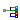
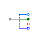
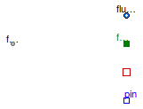
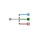
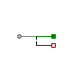
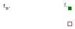

Table of Contents
- User's Guide
- Blocks
- Conditions
- Assemblies
- Regions
- Subregions
- Phases
- Species
- Connectors
- Characteristics
- Units
- Quantities
- Utilities
- Icons
Download
- Latest version (**Empty; please check back soon or contact kdavies4 at gmail.com.)
FCSys.Conditions.Adapters.MSL.Species
Adapters for single speciesInformation
Extends from Modelica.Icons.Package (Icon for standard packages).Package Content
| Name | Description |
|---|---|
| Adapter to connect e- between FCSys and Modelica (electrical and heat only) | |
|  Fluid | Adapter to connect a single fluid species between FCSys and Modelica |
| FluidNeutral | Adapter to connect a single neutral fluid species between FCSys and Modelica |
| Solid | Adapter to connect a single solid species between FCSys and Modelica (heat only) |
 FCSys.Conditions.Adapters.MSL.Species.'e-'
FCSys.Conditions.Adapters.MSL.Species.'e-'
Adapter to connect e- between FCSys and Modelica (electrical and heat only)

Information
Extends from FCSys.Icons.Names.Top2.
Parameters
| Type | Name | Default | Description |
|---|---|---|---|
| Geometry | |||
| Area | A | U.cm^2 | Area of the interface [l2] |
| Side | side | Side.n | FCSys side of the interface |
Connectors
| Type | Name | Description |
|---|---|---|
| Face | face | Connector for material, momentum, and energy of a single species |
| NegativePin | pin | Modelica electrical pin |
| HeatPort_b | heatPort | Modelica heat port |
Modelica definition
model 'e-' "Adapter to connect e- between FCSys and Modelica (electrical and heat only)" import FCSys.Utilities.inSign; extends FCSys.Icons.Names.Top2; // Geometry parameter Q.Area A=U.cm^2 "Area of the interface"; parameter Side side=Side.n "FCSys side of the interface"; replaceable package Data = Characteristics.'e-'.Graphite constrainedby Characteristics.BaseClasses.Characteristic "Characteristic data (for FCSys)"; Connectors.Face face "Connector for material, momentum, and energy of a single species"; Modelica.Electrical.Analog.Interfaces.NegativePin pin "Modelica electrical pin"; Modelica.Thermal.HeatTransfer.Interfaces.HeatPort_b heatPort "Modelica heat port"; equation // Equal properties face.T = heatPort.T*U.K "Temperature"; // Conservation (without storage) 0 = face.Ndot "Material diffusion"; 0 = A*face.rho*face.phi[1] + pin.i*U.A/Data.z "Material advection (also charge)"; inSign(side)*pin.v*face.rho*A*Data.z*U.V = face.mPhidot[1] "Normal translational momentum"; {0,0} = face.mPhidot[2:3] "Transverse translational momentum"; 0 = face.Qdot + heatPort.Q_flow*U.W "Energy"; // Note: All of the advective terms (for all the balance equations) // cancel across the interface. end 'e-';
 FCSys.Conditions.Adapters.MSL.Species.Fluid
Adapter to connect a single fluid species between FCSys and Modelica
Information
Extends from FCSys.Icons.Names.Top3.
Parameters
| Type | Name | Default | Description |
|---|---|---|---|
| Geometry | |||
| Area | A | U.cm^2 | Area of the interface [l2] |
| Side | side | Side.n | FCSys side of the interface |
Connectors
| Type | Name | Description |
|---|---|---|
| Face | face | Connector for material, momentum, and energy of a single species |
| FluidPort_b | fluidPort | Modelica fluid port |
| Flange_a | flange[Axis] | Modelica translational flanges |
| HeatPort_b | heatPort | Modelica heat port |
| NegativePin | pin | Modelica electrical pin |
Modelica definition
model Fluid "Adapter to connect a single fluid species between FCSys and Modelica" import FCSys.Utilities.inSign; extends FCSys.Icons.Names.Top3; parameter Q.Area A=U.cm^2 "Area of the interface"; parameter Side side=Side.n "FCSys side of the interface"; replaceable package Data = Characteristics.BaseClasses.Characteristic "Characteristic data (for FCSys)"; replaceable package Medium = Modelica.Media.IdealGases.SingleGases.H2O constrainedby Modelica.Media.Interfaces.PartialPureSubstance "Medium model (for Modelica)"; Medium.BaseProperties medium "Base properties of the fluid"; Q.Current I "Material current"; Connectors.Face face "Connector for material, momentum, and energy of a single species"; Modelica.Fluid.Interfaces.FluidPort_b fluidPort(redeclare final package Medium = Medium) "Modelica fluid port"; Modelica.Mechanics.Translational.Interfaces.Flange_a flange[Axis] "Modelica translational flanges"; Modelica.Thermal.HeatTransfer.Interfaces.HeatPort_b heatPort "Modelica heat port"; Modelica.Electrical.Analog.Interfaces.NegativePin pin "Modelica electrical pin"; equation // Aliases (for common terms) I = face.Ndot + face.phi[1]*face.rho*A "Current"; // Base media properties medium.p = fluidPort.p; medium.T = heatPort.T; medium.Xi = ones(Medium.nXi)/Medium.nXi; // Equal properties medium.MM*face.rho = medium.d*U.mol/U.m^3 "Density"; face.phi = der(flange.s)*U.m/U.s "Velocity"; face.T = heatPort.T*U.K "Temperature"; medium.h = fluidPort.h_outflow; // Conservation (without storage) 0 = Data.z*I + pin.i*U.A "Charge"; 0 = I + (fluidPort.m_flow/medium.MM)*U.mol/U.s "Material"; inSign(side)*pin.v*face.rho*A*Data.z*U.V = face.mPhidot[1] + flange[1].f*U.N "Normal translational momentum"; {0,0} = face.mPhidot[2:3] + flange[2:3].f*U.N "Transverse translational momentum"; 0 = face.Qdot + heatPort.Q_flow*U.W "Energy"; // Note: All of the advective terms (for all the balance equations) // cancel across the interface. end Fluid;
 FCSys.Conditions.Adapters.MSL.Species.FluidNeutral
Adapter to connect a single neutral fluid species between FCSys and Modelica

Information
Extends from FCSys.Icons.Names.Top3.
Parameters
| Type | Name | Default | Description |
|---|---|---|---|
| Geometry | |||
| Area | A | U.cm^2 | Area of the interface [l2] |
Connectors
| Type | Name | Description |
|---|---|---|
| Face | face | Connector for material, momentum, and energy of a single species |
| FluidPort_b | fluidPort | Modelica fluid port |
| Flange_a | flange[Axis] | Modelica translational flanges |
| HeatPort_b | heatPort | Modelica heat port |
Modelica definition
model FluidNeutral "Adapter to connect a single neutral fluid species between FCSys and Modelica" import assert = FCSys.Utilities.assertEval; extends FCSys.Icons.Names.Top3; parameter Q.Area A=U.cm^2 "Area of the interface"; replaceable package Data = Characteristics.BaseClasses.Characteristic "Characteristic data (for FCSys)"; replaceable package Medium = Modelica.Media.IdealGases.SingleGases.H2O constrainedby Modelica.Media.Interfaces.PartialPureSubstance "Medium model (for Modelica)"; Medium.BaseProperties medium "Base properties of the fluid"; Connectors.Face face "Connector for material, momentum, and energy of a single species"; Modelica.Fluid.Interfaces.FluidPort_b fluidPort(redeclare final package Medium = Medium) "Modelica fluid port"; Modelica.Mechanics.Translational.Interfaces.Flange_a flange[Axis] "Modelica translational flanges"; Modelica.Thermal.HeatTransfer.Interfaces.HeatPort_b heatPort "Modelica heat port"; initial equation assert(Data.z == 0, "The species must be neutral, but its chemical formula is " + Data.formula); equation // Base media properties medium.p = fluidPort.p; medium.T = heatPort.T; medium.Xi = ones(Medium.nXi)/Medium.nXi; // Equal properties medium.MM*face.rho = medium.d*U.mol/U.m^3 "Density"; face.phi = der(flange.s)*U.m/U.s "Velocity"; face.T = heatPort.T*U.K "Temperature"; medium.h = fluidPort.h_outflow; // Conservation (without storage) 0 = face.Ndot + face.phi[1]*face.rho*A + (fluidPort.m_flow/medium.MM)*U.mol/U.s "Material"; {0,0,0} = face.mPhidot + flange.f*U.N "Translational momentum"; 0 = face.Qdot + heatPort.Q_flow*U.W "Energy"; // Note: All of the advective terms (for all the balance equations) // cancel across the interface. end FluidNeutral;
 FCSys.Conditions.Adapters.MSL.Species.Solid
Adapter to connect a single solid species between FCSys and Modelica (heat only)
Information
Extends from FCSys.Icons.Names.Top2.
Connectors
| Type | Name | Description |
|---|---|---|
| Face | face | Connector for material, momentum, and energy of a single species |
| Flange_a | flange[Axis] | Modelica translational flanges |
| HeatPort_b | heatPort | Modelica heat port |
Modelica definition
model Solid "Adapter to connect a single solid species between FCSys and Modelica (heat only)" extends FCSys.Icons.Names.Top2; replaceable package Data = Characteristics.BaseClasses.Characteristic "Characteristic data (for FCSys)"; Connectors.Face face "Connector for material, momentum, and energy of a single species"; Modelica.Mechanics.Translational.Interfaces.Flange_a flange[Axis] "Modelica translational flanges"; Modelica.Thermal.HeatTransfer.Interfaces.HeatPort_b heatPort "Modelica heat port"; equation // Equal properties face.phi = der(flange.s)*U.m/U.s "Velocity"; face.T = heatPort.T*U.K "Temperatures"; // Conservation (without storage) 0 = face.Ndot "Material"; {0,0,0} = face.mPhidot + flange.f*U.N "Translational momentum"; 0 = face.Qdot + heatPort.Q_flow*U.W "Energy"; // Note: All of the advective terms (for all the balance equations) // cancel across the interface. end Solid;